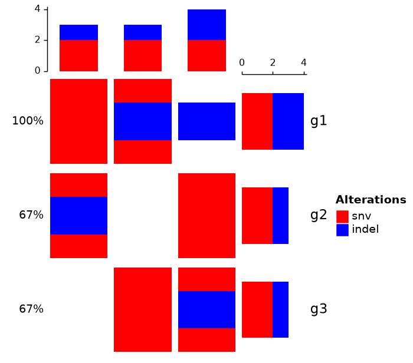
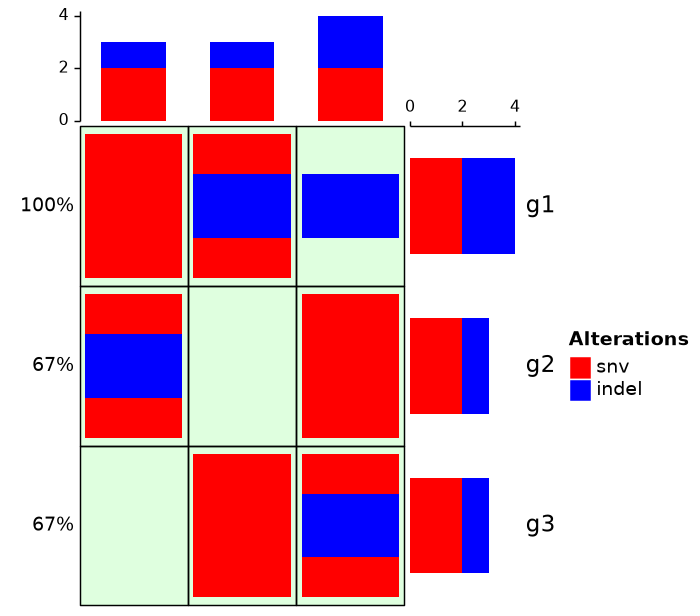
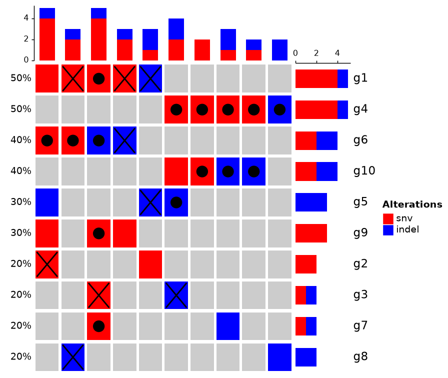
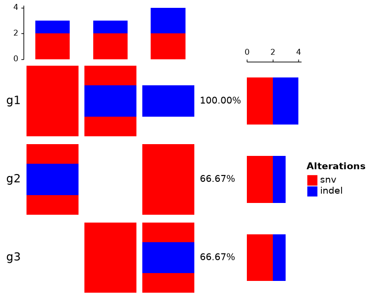
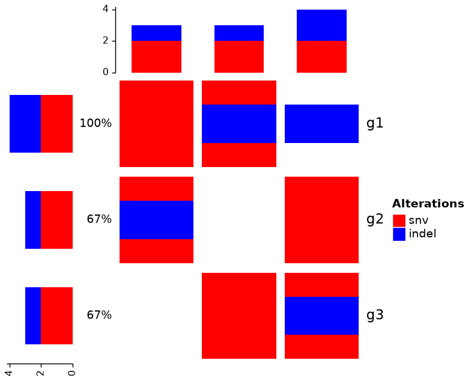
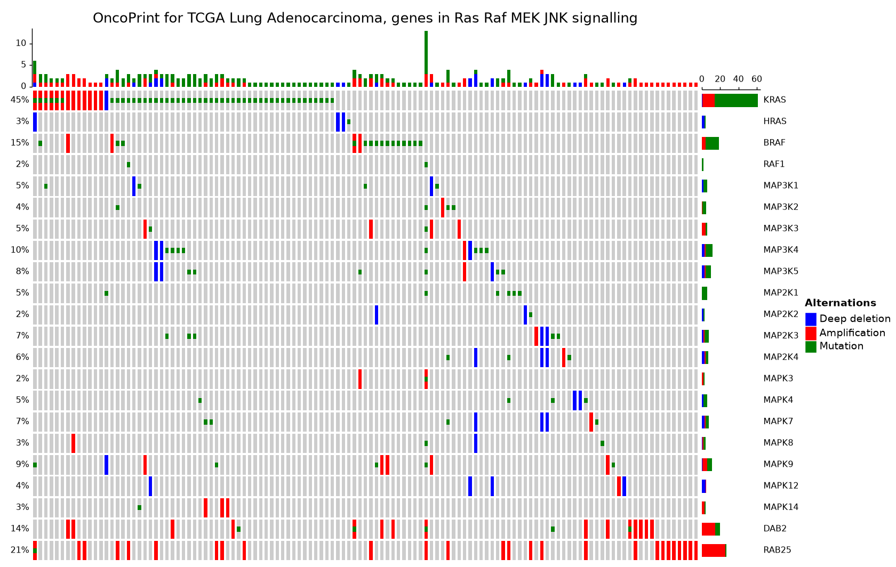
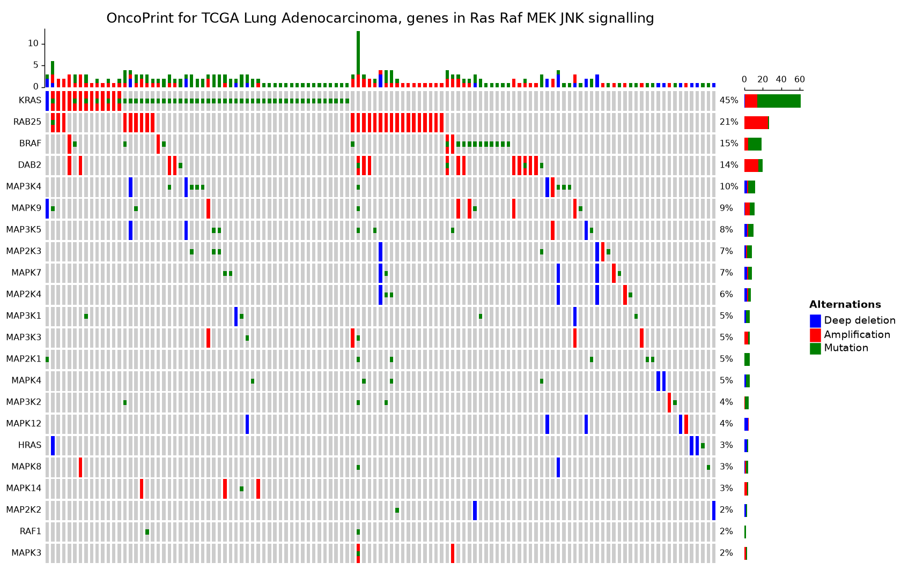
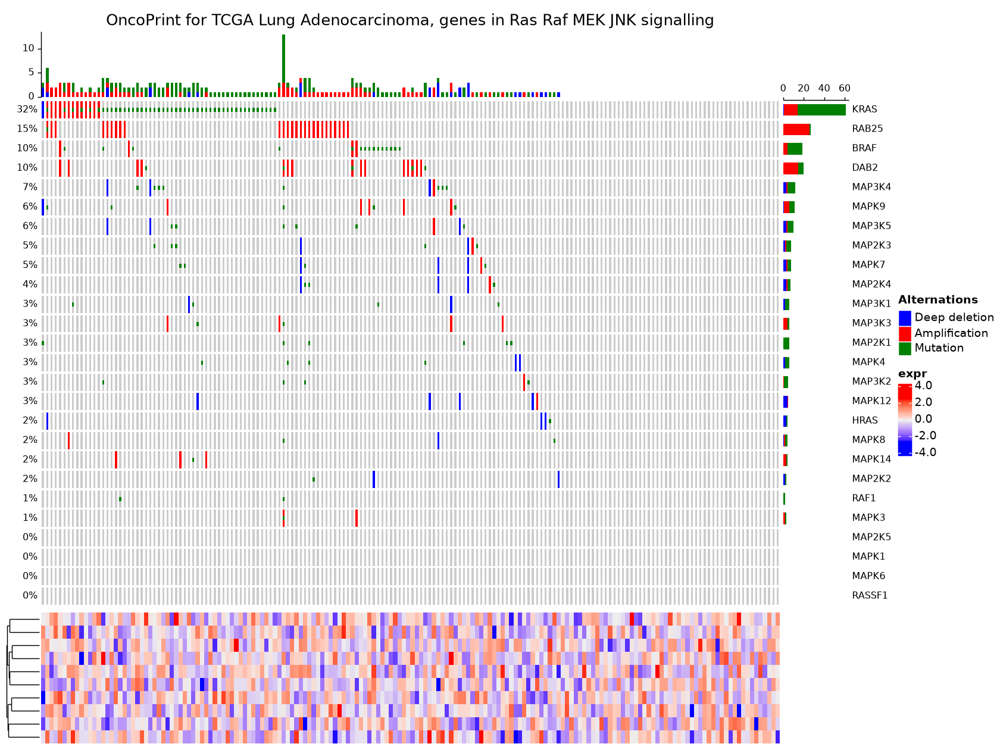
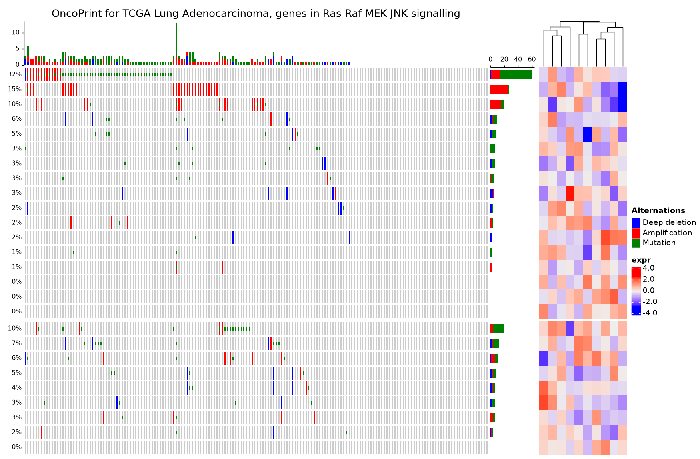

7 OncoPrint#
OncoPrint
is a compact heatmap layout for visualizing multiple genomic alteration
events across genes and samples. ComplexHeatmap-py provides
oncoPrint() to generate cBioPortal-style oncoPrints with
automatic gene-frequency sorting, mutual-exclusivity column sorting
(memoSort), percentage summaries, and stacked alteration
barplots on both margins. Because oncoPrint() returns a
standard Heatmap object, it integrates seamlessly with
additional heatmaps and annotations from A Single Heatmap, Heatmap Annotations, and A List of Heatmaps.
7.1 General settings#
7.1.1 Input data format#
oncoPrint() accepts two input formats. The first format
is a character matrix or pandas.DataFrame where each cell
encodes one or more alteration types separated by a delimiter. In the
example below, gene g1 in sample s1 carries
both snv and indel:
import io
import pandas as pd
import complexheatmap as ch
csv_txt = (
"gene,s1,s2,s3\n"
"g1,snv;indel,snv,indel\n"
"g2,,snv;indel,snv\n"
"g3,snv,,indel;snv\n"
)
mat = pd.read_csv(io.StringIO(csv_txt), index_col=0, keep_default_na=False)
mat s1 s2 s3
gene
g1 snv;indel snv indel
g2 snv;indel snv
g3 snv indel;snvTo parse cell strings into lists of alteration names,
oncoPrint() accepts a get_type callable. By
default, default_get_type() splits strings automatically on
any of ;, :, ,, or |
and discards empty/missing tokens:
ch.default_get_type(mat.iloc[0, 0])
# ['snv', 'indel']
ch.default_get_type(mat.iloc[0, 1])
# ['snv']If your dataset uses a custom separator (for example "+"
or whitespace), pass a custom parser such as
get_type=lambda x: [s.strip() for s in str(x).split("+") if s.strip()].
When your strings use ;, :, ,, or
|, you do not need to pass get_type
explicitly.
Because multiple alterations can coexist in the same
(gene, sample) cell, alter_fun specifies how
each alteration type is rendered on top of the cell rectangle. When
alter_fun is a dictionary, keys correspond to alteration
names and insertion order determines drawing order.
Below, snv is drawn first (0.9 * h) followed
by indel (0.4 * h), so both remain visible
when both occur in one cell. Each drawer function receives four
Unit arguments (x, y, w, h) giving the cell
center and dimensions in npc units.
col maps alteration names to colors used for the
top/right barplot annotations and the legend:
from complexheatmap import gpar, grid, oncoPrint
col = {"snv": "red", "indel": "blue"}
alter_fun = {
"snv": lambda x, y, w, h: grid.rect(x, y, w * 0.9, h * 0.9, gp=gpar(fill=col["snv"], col=None)),
"indel": lambda x, y, w, h: grid.rect(x, y, w * 0.9, h * 0.4, gp=gpar(fill=col["indel"], col=None)),
}
op = oncoPrint(mat, alter_fun=alter_fun, col=col)
ch.draw(op)
Notice that the barplot stacks and legend order reflect the
alteration types and colors configured in col and
alter_fun.
The second supported input format is a dictionary (or list) of binary
indicator matrices/DataFrames—one per alteration type—where
1/True indicates presence and
0/False indicates absence. When matrices have
partially overlapping row or column sets, unify_mat_list()
aligns every matrix to the union of all rows and columns (filling
missing entries with default=0):
from complexheatmap import unify_mat_list
m_snv = pd.DataFrame(
[[1, 1, 0], [0, 1, 1], [1, 0, 1]],
index=["g1", "g2", "g3"],
columns=["s1", "s2", "s3"],
)
m_indel = pd.DataFrame(
[[1, 0, 1], [0, 1, 0], [0, 0, 1]],
index=["g1", "g2", "g3"],
columns=["s1", "s2", "s3"],
)
mat_list = unify_mat_list({"snv": m_snv, "indel": m_indel}, default=0)
op = oncoPrint(mat_list, alter_fun=alter_fun, col=col)
ch.draw(op)
For the remainder of this chapter, we use the delimited string matrix representation.
7.1.2 Define the alter_fun()#
Instead of a dictionary of per-alteration callbacks,
alter_fun can be supplied as a single function accepting
five arguments: (x, y, w, h, v).
Python vs. R difference: In R
ComplexHeatmap,vis a named logical vector. InComplexHeatmap-py,vis"background"when no alterations are present in the cell, a singlestr(e.g.,"snv") when one alteration is present, or alist[str](e.g.,["snv", "indel"]) when multiple alterations co-occur. Normalizingvto a list makes cell rendering concise and safe:
def single_alter_fun(x, y, w, h, v):
types = [] if v == "background" else ([v] if isinstance(v, str) else list(v))
if "snv" in types:
grid.rect(x, y, w * 0.9, h * 0.9, gp=gpar(fill=col["snv"], col=None))
if "indel" in types:
grid.rect(x, y, w * 0.9, h * 0.4, gp=gpar(fill=col["indel"], col=None))
ch.draw(oncoPrint(mat, alter_fun=single_alter_fun, col=col))
Using a single function allows cell geometry to adapt dynamically to
the number of co-occurring events. Here, a cell containing
n alterations is split vertically into n equal
bands:
def stacked_alter_fun(x, y, w, h, v):
types = [] if v == "background" else ([v] if isinstance(v, str) else list(v))
n = len(types)
h_box = h * 0.9
if n > 0:
for idx, tp in enumerate(types, start=1):
grid.rect(
x,
y - h_box * 0.5 + (idx / n) * h_box,
w * 0.9,
(1.0 / n) * h_box,
gp=gpar(fill=col[tp], col=None),
just="top",
)
ch.draw(oncoPrint(mat, alter_fun=stacked_alter_fun, col=col))
Arbitrary grid primitives such as polygons
(grid.polygon() with unit_c()) work directly
inside alter_fun—for example, splitting each cell into
lower-left (snv) and upper-right (indel)
triangles:
from complexheatmap import unit_c
alter_fun_tri = {
"background": lambda x, y, w, h: (
grid.polygon(unit_c(x - 0.5 * w, x - 0.5 * w, x + 0.5 * w), unit_c(y - 0.5 * h, y + 0.5 * h, y - 0.5 * h), gp=gpar(fill="grey", col="white")),
grid.polygon(unit_c(x + 0.5 * w, x + 0.5 * w, x - 0.5 * w), unit_c(y + 0.5 * h, y - 0.5 * h, y + 0.5 * h), gp=gpar(fill="grey", col="white")),
),
"snv": lambda x, y, w, h: grid.polygon(
unit_c(x - 0.5 * w, x - 0.5 * w, x + 0.5 * w),
unit_c(y - 0.5 * h, y + 0.5 * h, y - 0.5 * h),
gp=gpar(fill=col["snv"], col="white"),
),
"indel": lambda x, y, w, h: grid.polygon(
unit_c(x + 0.5 * w, x + 0.5 * w, x - 0.5 * w),
unit_c(y + 0.5 * h, y - 0.5 * h, y + 0.5 * h),
gp=gpar(fill=col["indel"], col="white"),
),
}
ch.draw(oncoPrint(mat, alter_fun=alter_fun_tri, col=col))
When defining many alteration graphics, you can preview every symbol
alongside its label with test_alter_fun():
from complexheatmap import test_alter_fun
alter_fun_7 = {
"mut1": lambda x, y, w, h: grid.rect(x, y, w, h, gp=gpar(fill="red", col=None)),
"mut2": lambda x, y, w, h: grid.rect(x, y, w, h, gp=gpar(fill="blue", col=None)),
"mut3": lambda x, y, w, h: grid.rect(x, y, w, h, gp=gpar(fill="yellow", col=None)),
"mut4": lambda x, y, w, h: grid.rect(x, y, w, h, gp=gpar(fill="purple", col=None)),
"mut5": lambda x, y, w, h: grid.rect(x, y, w, h, gp=gpar(fill=None, lwd=2)),
"mut6": lambda x, y, w, h: grid.points(x, y, pch=16),
"mut7": lambda x, y, w, h: grid.segments(x - w * 0.5, y - h * 0.5, x + w * 0.5, y + h * 0.5, gp=gpar(lwd=2)),
}
test_alter_fun(alter_fun_7)
When passing a single-callable alter_fun to
test_alter_fun(), supply type=["snv", "indel"]
explicitly so test_alter_fun() knows which alteration
labels to test.
7.1.3 Background#
In a dictionary alter_fun, the special
"background" key controls the background layer drawn
beneath alterations:
af_green = {
"background": lambda x, y, w, h: grid.rect(x, y, w, h, gp=gpar(fill="#00FF0020")),
**alter_fun,
}
ch.draw(oncoPrint(mat, alter_fun=af_green, col=col))
To remove the background completely, either omit
"background" or supply a no-op callback
lambda *args: None (note that setting
"background": None directly is not callable; a no-op
callable explicitly skips drawing):
af_none = {
"background": lambda *args: None,
**alter_fun,
}
ch.draw(oncoPrint(mat, alter_fun=af_none, col=col))
7.1.4 Complex alteration types#
When integrating multiple variant calling or genomic annotation
sources, alteration types often split naturally into primary
classes (e.g., snv, indel) and
secondary classes (e.g., intronic,
exonic). Instead of creating four separate colors, you can
draw colored rectangles for primary classes and overlay simple geometric
symbols (dots for intronic, diagonal crosses for
exonic) for secondary classes, while keeping the marginal
barplots and legend focused exclusively on snv and
indel:
import numpy as np
from complexheatmap import HeatmapAnnotation, anno_oncoprint_barplot, rowAnnotation
rng = np.random.default_rng(123)
x1 = rng.choice(["", "snv"], 100, replace=True, p=[0.8, 0.2])
x2 = rng.choice(["", "indel"], 100, replace=True, p=[0.8, 0.2])
x2[x1 == "snv"] = ""
x3 = rng.choice(["", "intronic"], 100, replace=True, p=[0.5, 0.5])
x4 = rng.choice(["", "exonic"], 100, replace=True, p=[0.5, 0.5])
x3[(x1 == "") & (x2 == "")] = ""
x4[(x1 == "") & (x2 == "")] = ""
x4[x3 == "intronic"] = ""
cells = [";".join([t for t in row if t != ""]) for row in zip(x1, x2, x3, x4)]
m_complex = pd.DataFrame(
np.array(cells, dtype=object).reshape(10, 10),
index=[f"g{i}" for i in range(1, 11)],
columns=[f"s{i}" for i in range(1, 11)],
)
af_complex = {
"background": lambda x, y, w, h: grid.rect(x, y, w * 0.9, h * 0.9, gp=gpar(fill="#CCCCCC", col=None)),
"snv": lambda x, y, w, h: grid.rect(x, y, w * 0.9, h * 0.9, gp=gpar(fill="red", col=None)),
"indel": lambda x, y, w, h: grid.rect(x, y, w * 0.9, h * 0.9, gp=gpar(fill="blue", col=None)),
"intronic": lambda x, y, w, h: grid.points(x, y, pch=16),
"exonic": lambda x, y, w, h: (
grid.segments(x - w * 0.4, y - h * 0.4, x + w * 0.4, y + h * 0.4, gp=gpar(lwd=2)),
grid.segments(x + w * 0.4, y - h * 0.4, x - w * 0.4, y + h * 0.4, gp=gpar(lwd=2)),
),
}
op = oncoPrint(
m_complex,
alter_fun=af_complex,
col={"snv": "red", "indel": "blue"},
top_annotation=HeatmapAnnotation(cbar=anno_oncoprint_barplot(["snv", "indel"])),
right_annotation=rowAnnotation(rbar=anno_oncoprint_barplot(["snv", "indel"], which="row")),
heatmap_legend_param={"title": "Alterations", "at": ["snv", "indel"], "labels": ["snv", "indel"]},
)
ch.draw(op)
Passing ["snv", "indel"] to
anno_oncoprint_barplot() and
at=["snv", "indel"] in heatmap_legend_param
ensures that the barplot counts and legend entries aggregate across
intronic and exonic subtypes cleanly.
7.1.5 Simplify alter_fun#
When alteration graphics are standard rectangles
("rect") or points ("point"),
alter_graphic() constructs the drawing function
automatically with built-in margin handling:
from complexheatmap import alter_graphic
op = oncoPrint(
mat,
alter_fun={
"snv": alter_graphic("rect", width=0.9, height=0.9, fill=col["snv"]),
"indel": alter_graphic("rect", width=0.9, height=0.4, fill=col["indel"]),
},
col=col,
)
ch.draw(op)
7.1.6 Other heatmap-related settings#
Column names are hidden by default in oncoPrint(). Turn
them on with show_column_names=True:
ch.draw(oncoPrint(mat, alter_fun=alter_fun, col=col, show_column_names=True))
Row names and alteration percentage labels are controlled by
show_row_names, show_pct,
row_names_side, pct_side, pct_gp,
and pct_digits:
ch.draw(
oncoPrint(
mat,
alter_fun=alter_fun,
col=col,
row_names_side="left",
pct_side="right",
pct_digits=2,
)
)
The top and right barplots are implemented via
anno_oncoprint_barplot(), so sizes and axis parameters can
be configured directly. Note that when specifying
axis_param for a row-side
anno_oncoprint_barplot() inside
rowAnnotation(), pass which="row" explicitly
so axis validation checks "top"/"bottom" sides
against the row orientation:
from complexheatmap import unit
ch.draw(
oncoPrint(
mat,
alter_fun=alter_fun,
col=col,
top_annotation=HeatmapAnnotation(cbar=anno_oncoprint_barplot(height=unit(1, "cm"))),
right_annotation=rowAnnotation(
rbar=anno_oncoprint_barplot(
which="row",
width=unit(4, "cm"),
axis_param={"at": [0, 2, 4], "labels": ["zero", "two", "four"], "side": "top", "labels_rot": 0},
)
),
)
)
You can also place the gene alteration barplot on the left with a reversed x-axis and omit the right barplot:
ch.draw(
oncoPrint(
mat,
alter_fun=alter_fun,
col=col,
left_annotation=rowAnnotation(
rbar=anno_oncoprint_barplot(which="row", axis_param={"direction": "reverse"})
),
right_annotation=None,
)
)
Because oncoPrint() returns a Heatmap, most
layout, splitting, typography, and annotation arguments from
Heatmap() apply directly. Next, we demonstrate these
features on a real cancer genomics dataset.
7.2 Apply to cBioPortal dataset#
The TCGA Lung Adenocarcinoma dataset from cBioPortal
(Ras-Raf-MEK-Erk/JNK signaling, 26 genes across 172 samples)
and its cBioPortal sample order are bundled directly in
ComplexHeatmap-py via ch.load_dataset():
mat = ch.load_dataset("tcga_lung_adenocarcinoma")
mat.iloc[:3, :3] TCGA-05-4384-01 TCGA-05-4390-01 TCGA-05-4425-01
row_name
KRAS MUT;
HRAS
BRAF This matrix contains three alteration types: HOMDEL,
AMP, and MUT. We define their colors and
visual styles using alter_graphic():
col = {"HOMDEL": "blue", "AMP": "red", "MUT": "#008000"}
alter_fun = {
"background": alter_graphic("rect", fill="#CCCCCC"),
"HOMDEL": alter_graphic("rect", fill=col["HOMDEL"]),
"AMP": alter_graphic("rect", fill=col["AMP"]),
"MUT": alter_graphic("rect", height=0.33, fill=col["MUT"]),
}Now construct and draw the OncoPrint, saving
column_title and heatmap_legend_param for
reuse below:
column_title = "OncoPrint for TCGA Lung Adenocarcinoma, genes in Ras Raf MEK JNK signalling"
heatmap_legend_param = {
"title": "Alternations",
"at": ["HOMDEL", "AMP", "MUT"],
"labels": ["Deep deletion", "Amplification", "Mutation"],
}
op = oncoPrint(
mat,
alter_fun=alter_fun,
col=col,
column_title=column_title,
heatmap_legend_param=heatmap_legend_param,
row_names_gp=gpar(fontsize=8),
pct_gp=gpar(fontsize=8),
)
ch.draw(op)
By default, genes are sorted in descending order of overall alteration frequency, and samples are ordered using the memoSort algorithm to highlight mutual exclusivity across top-altered genes.
7.2.1 Remove empty rows and columns#
Samples and genes without any alterations remain in the plot by
default. Set remove_empty_columns=True and
remove_empty_rows=True to drop them:
op_ne = oncoPrint(
mat,
alter_fun=alter_fun,
col=col,
remove_empty_columns=True,
remove_empty_rows=True,
column_title=column_title,
heatmap_legend_param=heatmap_legend_param,
row_names_gp=gpar(fontsize=8),
pct_gp=gpar(fontsize=8),
)
ch.draw(op_ne)
Notice that removing empty rows and columns changes the matrix
dimensions (26 x 172 shrinks to 22 x 121), and
percentage values are recalculated over the retained samples. If you
concatenate the OncoPrint with additional heatmaps or pass custom
sample/gene annotations, filter the empty rows and columns from your
matrix beforehand so all components stay aligned.
7.2.2 Reorder the oncoPrint#
Like Heatmap(), oncoPrint() accepts custom
row_order and column_order lists (0-based
integer indices or row/column names). Here we compare memoSort
against cBioPortal’s downloaded sample_order (filtered to
the 121 non-empty samples when
remove_empty_columns=True):
sample_order = ch.load_dataset("sample_order")
non_empty_rows = op_ne._rownames
non_empty_cols_set = set(op_ne._colnames)
filtered_sample_order = [s for s in sample_order if s in non_empty_cols_set]
op_cbio = oncoPrint(
mat,
alter_fun=alter_fun,
col=col,
row_order=non_empty_rows,
column_order=filtered_sample_order,
remove_empty_columns=True,
remove_empty_rows=True,
column_title=column_title,
heatmap_legend_param=heatmap_legend_param,
row_names_gp=gpar(fontsize=8),
pct_gp=gpar(fontsize=8),
)
ch.draw(op_cbio)
7.2.3 OncoPrint annotations#
anno_oncoprint_barplot() supports selecting a subset of
alteration types as positional argument type:
op_sub = oncoPrint(
mat,
alter_fun=alter_fun,
col=col,
top_annotation=HeatmapAnnotation(
column_barplot=anno_oncoprint_barplot(["MUT"], border=True, height=unit(4, "cm")),
),
right_annotation=rowAnnotation(
row_barplot=anno_oncoprint_barplot(
["AMP", "HOMDEL"],
which="row",
border=True,
width=unit(4, "cm"),
axis_param={"side": "bottom", "labels_rot": 90},
),
),
remove_empty_columns=True,
remove_empty_rows=True,
column_title=column_title,
heatmap_legend_param=heatmap_legend_param,
row_names_gp=gpar(fontsize=8),
pct_gp=gpar(fontsize=8),
)
ch.draw(op_sub)
Set show_fraction=True to display alteration fractions
instead of counts:
op_frac = oncoPrint(
mat,
alter_fun=alter_fun,
col=col,
top_annotation=HeatmapAnnotation(column_barplot=anno_oncoprint_barplot(show_fraction=True)),
right_annotation=rowAnnotation(row_barplot=anno_oncoprint_barplot(which="row", show_fraction=True)),
remove_empty_columns=True,
remove_empty_rows=True,
column_title=column_title,
heatmap_legend_param=heatmap_legend_param,
row_names_gp=gpar(fontsize=8),
pct_gp=gpar(fontsize=8),
)
ch.draw(op_frac)
Flip gene names to the left and alteration percentages to the right:
op_sides = oncoPrint(
mat,
alter_fun=alter_fun,
col=col,
remove_empty_columns=True,
remove_empty_rows=True,
pct_side="right",
row_names_side="left",
column_title=column_title,
heatmap_legend_param=heatmap_legend_param,
row_names_gp=gpar(fontsize=8),
pct_gp=gpar(fontsize=8),
)
ch.draw(op_sides)
Additional sample-level or gene-level annotation tracks can be
combined directly inside HeatmapAnnotation() and
rowAnnotation(). When restricting to non-empty genes and
samples, pre-filter mat so custom annotations match its
dimensions (22 x 121):
from complexheatmap import anno_barplot, anno_points
mat_ne = mat.loc[non_empty_rows, [c for c in mat.columns if c in non_empty_cols_set]]
ng_ne, ns_ne = mat_ne.shape
op_extra = oncoPrint(
mat_ne,
alter_fun=alter_fun,
col=col,
top_annotation=HeatmapAnnotation(
cbar=anno_oncoprint_barplot(),
foo1=np.arange(1, ns_ne + 1),
bar1=anno_points(np.arange(1, ns_ne + 1)),
),
left_annotation=rowAnnotation(foo2=np.arange(1, ng_ne + 1)),
right_annotation=rowAnnotation(bar2=anno_barplot(np.arange(1, ng_ne + 1))),
column_title=column_title,
heatmap_legend_param=heatmap_legend_param,
row_names_gp=gpar(fontsize=8),
pct_gp=gpar(fontsize=8),
)
ch.draw(op_extra, padding=unit([8, 4, 4, 4], "mm"))
7.2.4 oncoPrint as a Heatmap#
Because oncoPrint() returns a Heatmap
instance, it can be concatenated horizontally (+) or
vertically (% v %) with expression heatmaps and
annotations.
Horizontal concatenation with a gene-expression heatmap:
from complexheatmap import Heatmap, v
rng_expr = np.random.default_rng(123)
ht_horiz = (
oncoPrint(
mat,
alter_fun=alter_fun,
col=col,
column_title=column_title,
heatmap_legend_param=heatmap_legend_param,
row_names_gp=gpar(fontsize=8),
pct_gp=gpar(fontsize=8),
)
+ Heatmap(rng_expr.standard_normal((mat.shape[0], 10)), name="expr", width=unit(4, "cm"))
)
ch.draw(ht_horiz)
Vertical concatenation with a sample-aligned expression heatmap:
ht_vert = (
oncoPrint(
mat,
alter_fun=alter_fun,
col=col,
column_title=column_title,
heatmap_legend_param=heatmap_legend_param,
row_names_gp=gpar(fontsize=8),
pct_gp=gpar(fontsize=8),
)
% v
% Heatmap(rng_expr.standard_normal((10, mat.shape[1])), name="expr", height=unit(4, "cm"))
)
ch.draw(ht_vert)
Splitting a combined HeatmapList by rows via
row_split in draw():
row_grp = rng_expr.choice(["Pathway A", "Pathway B"], mat.shape[0], replace=True)
ch.draw(ht_horiz, row_split=row_grp)
You can also split both rows and columns directly in
oncoPrint() with row_split and
column_split—for instance, separating
RAS/RAF genes from downstream MAPK genes and
stratifying samples by KRAS alteration status:
kras_status = ["KRAS altered" if str(x).strip() != "" else "KRAS WT" for x in mat_ne.loc["KRAS"]]
gene_grp = ["RAS/RAF" if g in {"KRAS", "HRAS", "BRAF", "RAF1"} else "MAPK cascade" for g in mat_ne.index]
op_rc_split = oncoPrint(
mat_ne,
alter_fun=alter_fun,
col=col,
row_split=gene_grp,
column_split=kras_status,
column_title=column_title,
heatmap_legend_param=heatmap_legend_param,
row_names_gp=gpar(fontsize=8),
pct_gp=gpar(fontsize=8),
)
ch.draw(op_rc_split)
Finally, after filtering empty rows or columns with
remove_empty_columns=True and
remove_empty_rows=True, inspect the retained gene and
sample names directly via ._rownames and
._colnames:
op_ne._rownames
# ['KRAS', 'HRAS', 'BRAF', 'RAF1', 'MAP3K1', 'MAP3K2', 'MAP3K3', 'MAP3K4',
# 'MAP3K5', 'MAP2K1', 'MAP2K2', 'MAP2K3', 'MAP2K4', 'MAPK3', 'MAPK4',
# 'MAPK7', 'MAPK8', 'MAPK9', 'MAPK12', 'MAPK14', 'DAB2', 'RAB25']
len(op_ne._colnames)
# 121